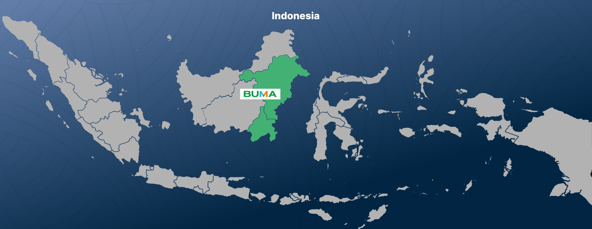
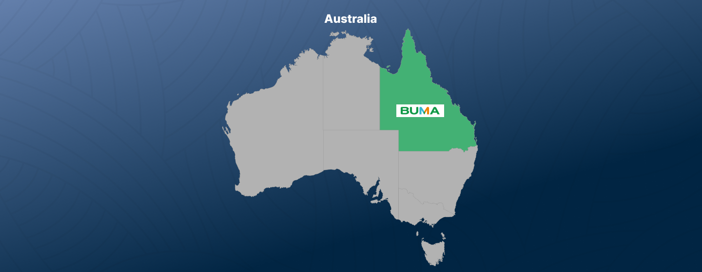
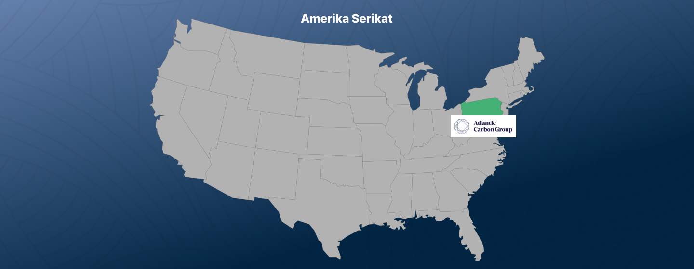
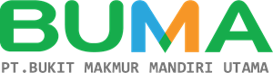
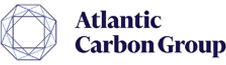
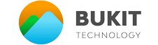
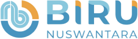
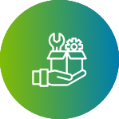
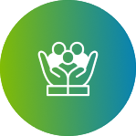
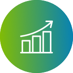

Delta Dunia Group adalah perusahaan induk yang berbasis di Indonesia dengan portofolio bisnis yang
beragam. Kami berada di garis depan inovasi dan keunggulan di industri pertambangan, menawarkan layanan
penambangan batu bara yang komprehensif di Indonesia dan Australia. Pada Juni 2024, kami memperluas
bisnis ke kepemilikan tambang melalui akuisisi strategis Atlantic Carbon Group, Inc. (ACG), produsen
antrasit berkualitas tinggi terkemuka di AS. Akuisisi ini menandai tonggak penting perusahaan, sekaligus
meningkatkan kemampuan kami dan memperkuat posisi kami di pasar pertambangan global.
Keahlian kami melampaui penambangan tradisional; kami memberdayakan sektor pertambangan yang lebih luas
dengan teknologi canggih dan menginisiasi program sosial yang mendukung pendidikan dan pengembangan
kewirausahaan. Komitmen kami bukan hanya untuk mengekstraksi nilai dari bumi tetapi juga untuk
berinvestasi di komunitas dan lingkungan yang kami sentuh.
Fondasi kami kuat, ditopang oleh kemitraan yang langgeng dan dedikasi terhadap penambangan yang
bertanggung jawab, menciptakan peluang kerja, dan meningkatkan kesejahteraan komunitas. Dedikasi ini
telah memperkuat peran kami sebagai warga korporat yang dipercaya, yang berdedikasi untuk memberikan
nilai yang berkelanjutan dan memelihara lingkungan yang berkelanjutan.
Dipandu oleh kepemimpinan visioner dan prinsip keuangan yang kuat, kami berkomitmen untuk memberikan
nilai tambah bagi seluruh pemangku kepentingan sembari bertransisi menuju ekonomi rendah karbon. Kami
berkomitmen kuat untuk mengurangi ketergantungan kami pada batubara termal, membuka jalan bagi masa
depan energi yang berkelanjutan melalui inovasi kolaboratif. Tim kami, motor penggerak kesuksesan kami,
mencontohkan ketahanan dan keunggulan, yang mendorong ambisi kami untuk pertumbuhan yang berkelanjutan.
Investasi kami hari ini adalah untuk mewujudkan hari esok. Kami terus membuka jalan dalam teknologi
berkelanjutan, eksplorasi mineral, dan solusi energi terbarukan, mempersiapkan masa depan di mana
warisan kami selaras dengan aspirasi dunia yang lebih hijau dan berkelanjutan.
Negara Tempat Kami Beroperasi



Our Subsidiaries




Visi
Menjadi penyedia solusi pertambangan dan energi kelas dunia yang bertanggung jawab kepada lingkungan.
Misi

Memenuhi kebutuhan sumber daya dunia secara efisien dan bertanggung jawab melalui solusi inovatif dan berkelanjutan.

Meminimalkan dampak lingkungan di area operasi kami.

Memaksimalkan kontribusi sosial dan ekonomi untuk memajukan generasi masa depan.
Values
Integritas
Kami menjalankan bisnis dengan berpegang teguh pada nilai-nilai integritas, kejujuran, kepercayaan, dan akuntabilitas.
Kompetensi
Kekuatan Perusahaan terletak pada SDM yang kompeten dan berdedikasi, sehingga kami sangat memahami pentingnya menciptakan lingkungan yang mendukung pertumbuhan dan pengembangan berkelanjutan.

Keunggulan
Perseroan mengutamakan pelayanan terbaik dengan standar profesional tertinggi melalui evaluasi, perbaikan, dan pembelajaran berkelanjutan di setiap kegiatan usaha.
Daya Tanggap dan Kecermatan
Kami menghargai para pemangku kepentingan dengan bertindak tanggap dan cermat di setiap kegiatan usaha.

Kepemimpinan
Keberanian dan integritas pribadi adalah prinsip kami dalam memimpin untuk mencapai visi menjadi yang terdepan di industri jasa pertambangan. Kami berusaha menginspirasi dan memotivasi orang-orang di sekitar kami untuk maju bersama.
Kerja Sama Team
Kami berpegang pada prinsip gotong royong dan selalu melakukan komunikasi terbuka yang intensif, berbagi pengetahuan dan kemampuan untuk mewujudkan visi dan misi kami di tengah lingkungan yang kompetitif.